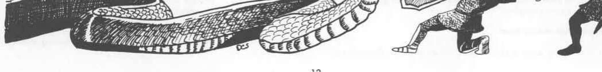
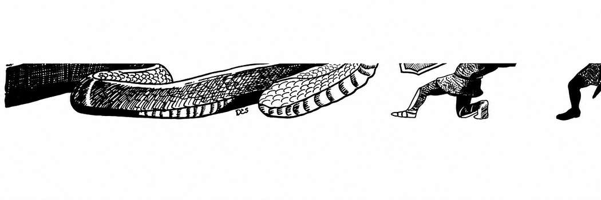
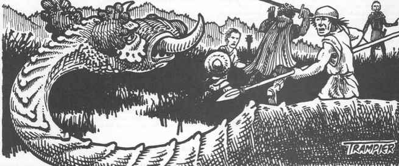
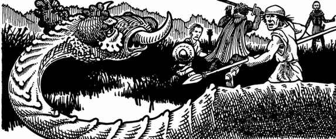
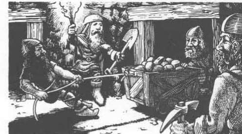
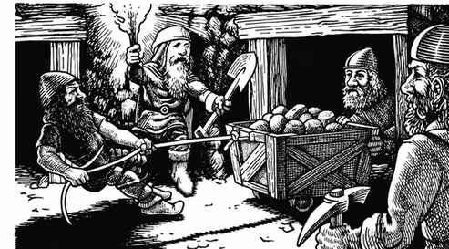

章节导读 · Chapter Overview
本章说明可供玩家选择的矮人、精灵、侏儒、半精灵、半身人、半兽人和人类，以及种族偏好和职业限制。






关于种族倾向、职业限制及高等级角色的裁定，可另参阅《地下城主指南》的角色种族与角色职业章节。
上一节：角色种族 · Character Races
下一节：角色种族表 · I 注释 Notes Regarding Character Race Table I